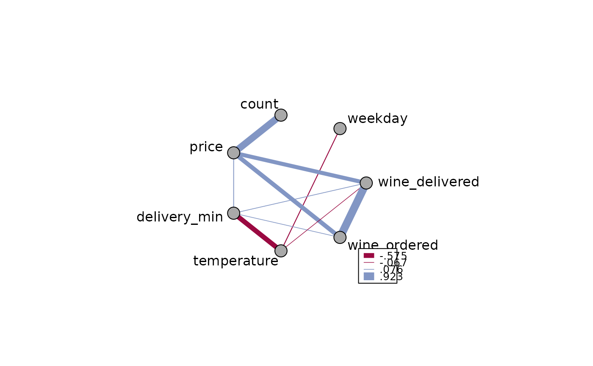
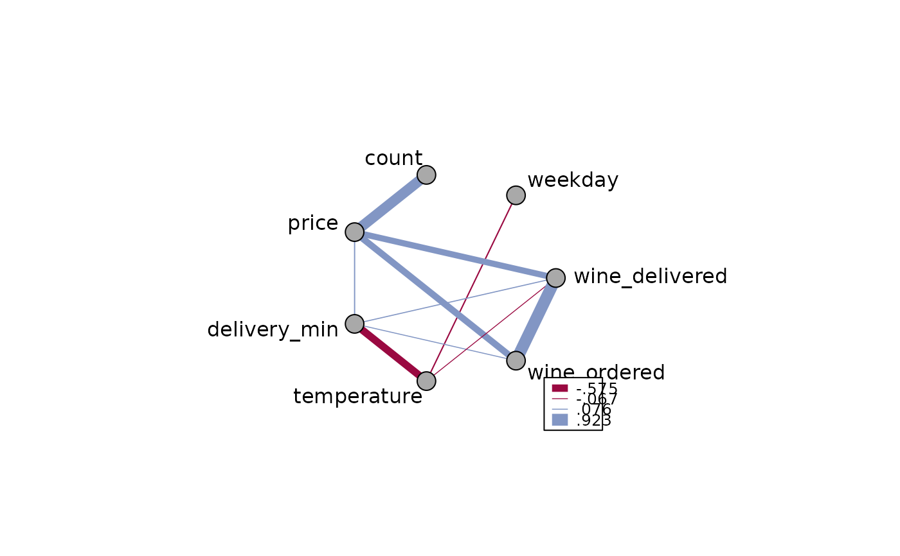

Plot a Web of Connected Points
PlotWeb.RdThis plot can be used to graphically display a correlation matrix by using the linewidth between the nodes in proportion to the correlation of two variables. It will place the elements homogenously around a circle and draw connecting lines between the points.
Arguments
- m
a symmetric matrix of numeric values
- col
the color for the connecting lines
- lty
the line type for the connecting lines, the default will be
par("lty").- lwd
the line widths for the connecting lines. If left to
NULLit will be linearly scaled between the minimum and maximum value ofm.- args.legend
list of additional arguments to be passed to the
legendfunction. Useargs.legend = NAif no legend should be added.- pch
the plotting symbols appearing in the plot, as a non-negative numeric vector (see
points, but unlike there negative values are omitted) or a vector of 1-character strings, or one multi-character string.- pt.cex
expansion factor(s) for the points.
- pt.col
the foreground color for the points, corresponding to its argument
col.- pt.bg
the background color for the points, corresponding to its argument
bg.- las
alignment of the labels, 1 means horizontal, 2 radial and 3 vertical.
- adj
adjustments for the labels. (Left: 0, Right: 1, Mid: 0.5)
- dist
gives the distance of the labels from the outer circle. Default is 2.
- cex.lab
the character extension for the labels.
- ...
dots are passed to plot.
Details
The function uses the lower triangular matrix of m, so this is the order colors, linewidth etc. must be given, when the defaults are to be overrun.
Value
A list of x and y coordinates, giving the coordinates of all the points drawn, useful for adding other elements to the plot.
See also
Examples
m <- cor(d.pizza[, which(sapply(d.pizza, IsNumeric, na.rm=TRUE))[-c(1:2)]],
use="pairwise.complete.obs")
PlotWeb(m=m, col=c(DescTools::hred, DescTools::hblue), main="Pizza Correlation")
 # let's describe only the significant corrs and start with a dataset
d.m <- d.pizza[, which(sapply(d.pizza, IsNumeric, na.rm=TRUE))[-c(1:2)]]
# get the correlation matrix
m <- cor(d.m, use="pairwise.complete.obs")
# let's get rid of all non significant correlations
ctest <- PairApply(d.m, function(x, y) cor.test(x, y)$p.value, symmetric=TRUE)
# ok, got all the p-values, now replace > 0.05 with NAs
m[ctest > 0.05] <- NA
# How does that look like now?
Format(m, na.form = ". ", ldigits=0, digits=3, align = "right")
#> weekday count price delivery_min temperature wine_ordered
#> weekday 1.000 . . . -.105 .
#> count . 1.000 .807 . . .
#> price . .807 1.000 .095 . .510
#> delivery_min . . .095 1.000 -.575 .076
#> temperature -.105 . . -.575 1.000 .
#> wine_ordered . . .510 .076 . 1.000
#> wine_delivered . . .478 .082 -.067 .923
#> wine_delivered
#> weekday .
#> count .
#> price .478
#> delivery_min .082
#> temperature -.067
#> wine_ordered .923
#> wine_delivered 1.000
PlotWeb(m, las=2, cex=1.2)
# let's describe only the significant corrs and start with a dataset
d.m <- d.pizza[, which(sapply(d.pizza, IsNumeric, na.rm=TRUE))[-c(1:2)]]
# get the correlation matrix
m <- cor(d.m, use="pairwise.complete.obs")
# let's get rid of all non significant correlations
ctest <- PairApply(d.m, function(x, y) cor.test(x, y)$p.value, symmetric=TRUE)
# ok, got all the p-values, now replace > 0.05 with NAs
m[ctest > 0.05] <- NA
# How does that look like now?
Format(m, na.form = ". ", ldigits=0, digits=3, align = "right")
#> weekday count price delivery_min temperature wine_ordered
#> weekday 1.000 . . . -.105 .
#> count . 1.000 .807 . . .
#> price . .807 1.000 .095 . .510
#> delivery_min . . .095 1.000 -.575 .076
#> temperature -.105 . . -.575 1.000 .
#> wine_ordered . . .510 .076 . 1.000
#> wine_delivered . . .478 .082 -.067 .923
#> wine_delivered
#> weekday .
#> count .
#> price .478
#> delivery_min .082
#> temperature -.067
#> wine_ordered .923
#> wine_delivered 1.000
PlotWeb(m, las=2, cex=1.2)
 # define line widths
PlotWeb(m, lwd=abs(m[lower.tri(m)] * 10))

# define line widths
PlotWeb(m, lwd=abs(m[lower.tri(m)] * 10))
